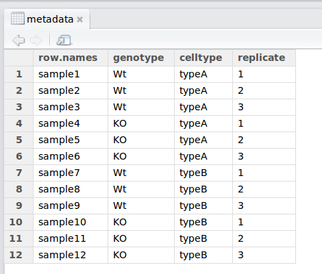

10 Reading data into R
10.0.1 The basics
Regardless of the specific analysis in R we are performing, we usually need to bring data in for any analysis being done in R, so learning how to read in data is a crucial component of learning to use R.
Many functions exist to read data in, and the function in R you use will depend on the file format being read in. Below we have a table with some examples of functions that can be used for importing some common text data types (plain text).
| Data type | Extension | Function | Package |
|---|---|---|---|
| Comma separated values | csv | read.csv() |
utils (default) |
read_csv() |
readr (tidyverse) | ||
| Tab separated values | tsv | read_tsv() |
readr |
| Other delimited formats | txt | read.table() |
utils |
read_table() |
readr | ||
read_delim() |
readr |
For example, if we have text file where the columns are separated by commas (comma-separated values or comma-delimited), you could use the function read.csv. However, if the data are separated by a different delimiter in a text file (e.g. “:”, “;”, ” “), you could use the generic read.table function and specify the delimiter (sep = " ") as an argument in the function.
In the above table we refer to base R functions as being contained in the “utils” package. In addition to base R functions, we have also listed functions from some other packages that can be used to import data, specifically the “readr” package that installs when you install the “tidyverse” suite of packages.
In addition to plain text files, you can also import data from other statistical analysis packages and Excel using functions from different packages.
| Data type | Extension | Function | Package |
|---|---|---|---|
| Stata version 13-14 | dta | readdta() |
haven |
| Stata version 7-12 | dta | read.dta() |
foreign |
| SPSS | sav | read.spss() |
foreign |
| SAS | sas7bdat | read.sas7bdat() |
sas7bdat |
| Excel | xlsx, xls | read_excel() |
readxl (tidyverse) |
Note, that these lists are not comprehensive, and may other functions exist for importing data. Once you have been using R for a bit, maybe you will have a preference for which functions you prefer to use for which data type.
10.0.2 Metadata
When working with large datasets, you will very likely be working with “metadata” file which contains the information about each sample in your dataset.

The metadata is very important information and we encourage you to think about creating a document with as much metadata you can record before you bring the data into R. Here is some additional reading on metadata from the HMS Data Management Working Group.
10.1 read.csv()
You can check the arguments for the function using the ? to ensure that you are entering all the information appropriately:
?read.csv
The first thing you will notice is that you’ve pulled up the documentation for read.table(), this is because that is the parent function and all the other functions are in the same family.
The next item on the documentation page is the function Description, which specifies that the output of this set of functions is going to be a data frame - “Reads a file in table format and creates a data frame from it, with cases corresponding to lines and variables to fields in the file.”
In usage, all of the arguments listed for read.table() are the default values for all of the family members unless otherwise specified for a given function. Let’s take a look at 2 examples: 1. The separator - * in the case of read.table() it is sep = "" (space or tab) * whereas for read.csv() it is sep = "," (a comma). 2. The header - This argument refers to the column headers that may (TRUE) or may not (FALSE) exist in the plain text file you are reading in. * in the case of read.table() it is header = FALSE (by default, it assumes you do not have column names) * whereas for read.csv() it is header = TRUE (by default, it assumes that all your columns have names listed).
The take-home from the “Usage” section for read.csv() is that it has one mandatory argument, the path to the file and filename in quotations.
10.1.0.1 Note on stringsAsFactors
Note that the read.table {utils} family of functions has an argument called stringsAsFactors, which by default will take the value of default.stringsAsFactors().
Type out default.stringsAsFactors() in the console to check what the default value is for your current R session. Is it TRUE or FALSE?
If default.stringsAsFactors() is set to TRUE, then stringsAsFactors = TRUE. In that case any function in this family of functions will coerce character columns in the data you are reading in to factor columns (i.e. coerce from vector to factor) in the resulting data frame.
If you want to maintain the character vector data structure (e.g. for gene names), you will want to make sure that stringsAsFactors = FALSE (or that default.stringsAsFactors() is set to FALSE).
10.1.1 List of functions for data inspection
We already saw how the functions head() and str() (in the releveling section) can be useful to check the content and the structure of a data.frame. Below is a non-exhaustive list of functions to get a sense of the content/structure of data. The list has been divided into functions that work on all types of objects, some that work only on vectors/factors (1 dimensional objects), and others that work on data frames and matrices (2 dimensional objects).
We have some exercises below that will allow you to gain more familiarity with these. You will definitely be using some of them in the next few homework sections.
- All data structures - content display:
str(): compact display of data contents (similar to what you see in the Global environment)class(): displays the data type for vectors (e.g. character, numeric, etc.) and data structure for dataframes, matrices, listssummary(): detailed display of the contents of a given object, including descriptive statistics, frequencieshead(): prints the first 6 entries (elements for 1-D objects, rows for 2-D objects)tail(): prints the last 6 entries (elements for 1-D objects, rows for 2-D objects)
- Vector and factor variables:
length(): returns the number of elements in a vector or factor
- Dataframe and matrix variables:
dim(): returns dimensions of the dataset (number_of_rows, number_of_columns) [Note, row numbers will always be displayed before column numbers in R]nrow(): returns the number of rows in the datasetncol(): returns the number of columns in the datasetrownames(): returns the row names in the datasetcolnames(): returns the column names in the dataset
Exercises
- Read the tab-delimited
project-summary.txtfile in thedatafolder it in to R usingread.table()and store it as the variableproj_summary. As you useread.table(), keep in mind that:- all the columns in the input text file have column names
- you want the first column of the text file to be used as row names (hint: look up the input for the
row.names =argument inread.table())
- Display the contents of
proj_summaryin your console
The materials in this lesson have been adapted from work created by the (HBC)](http://bioinformatics.sph.harvard.edu/) and Data Carpentry (http://datacarpentry.org/). These are open access materials distributed under the terms of the Creative Commons Attribution license (CC BY 4.0), which permits unrestricted use, distribution, and reproduction in any medium, provided the original author and source are credited.